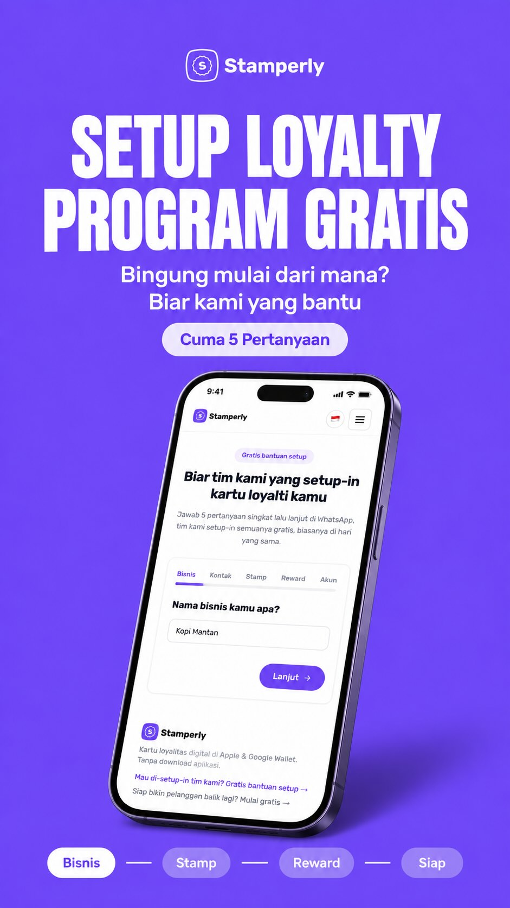
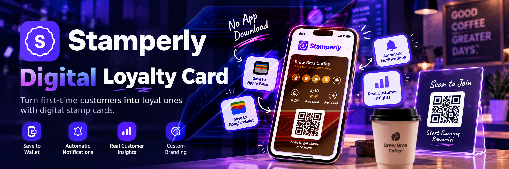
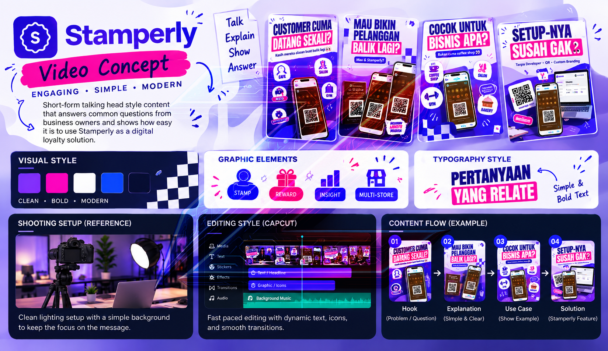
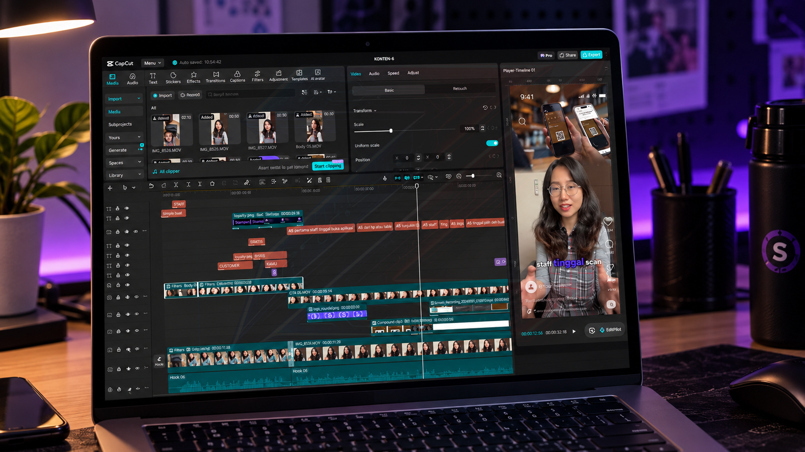
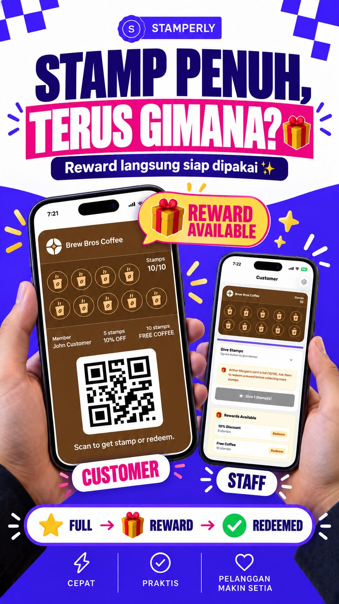
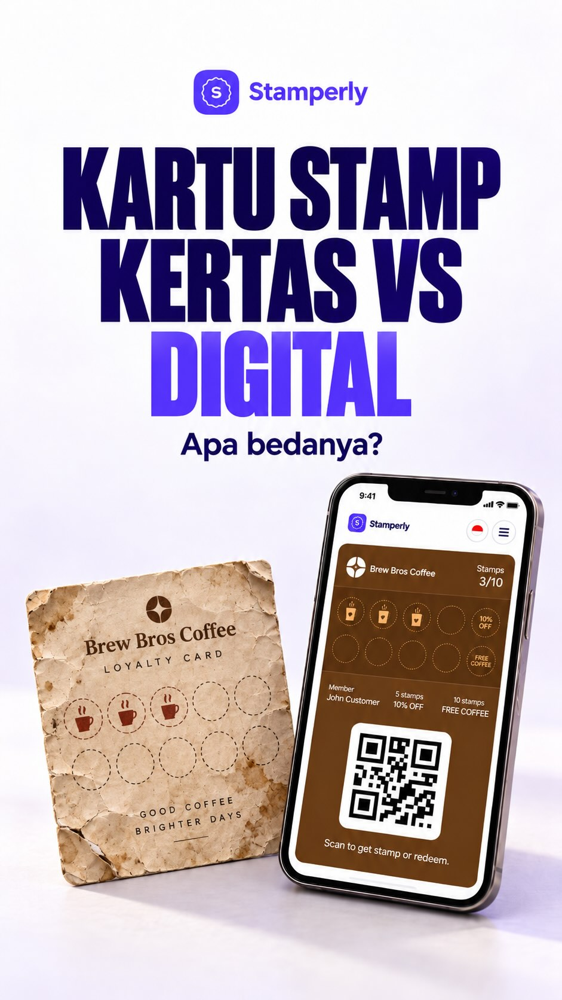
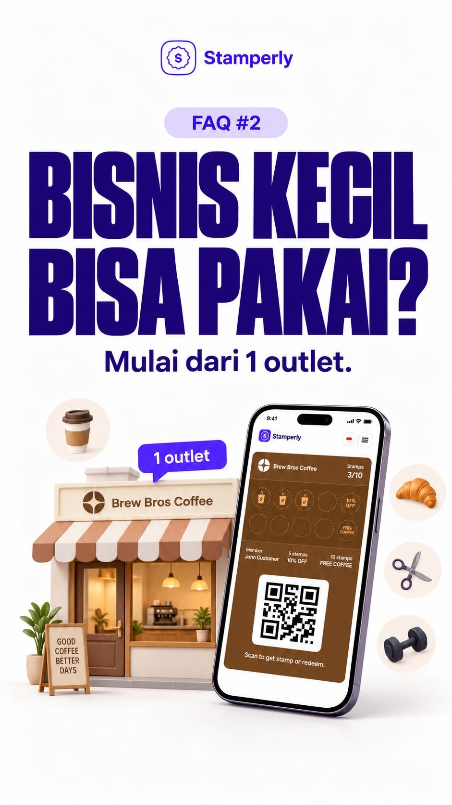
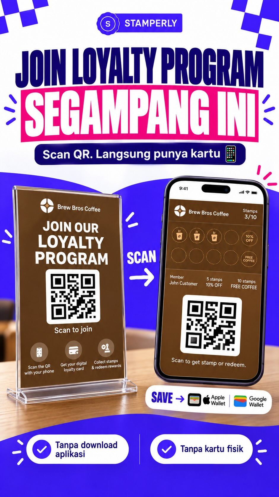
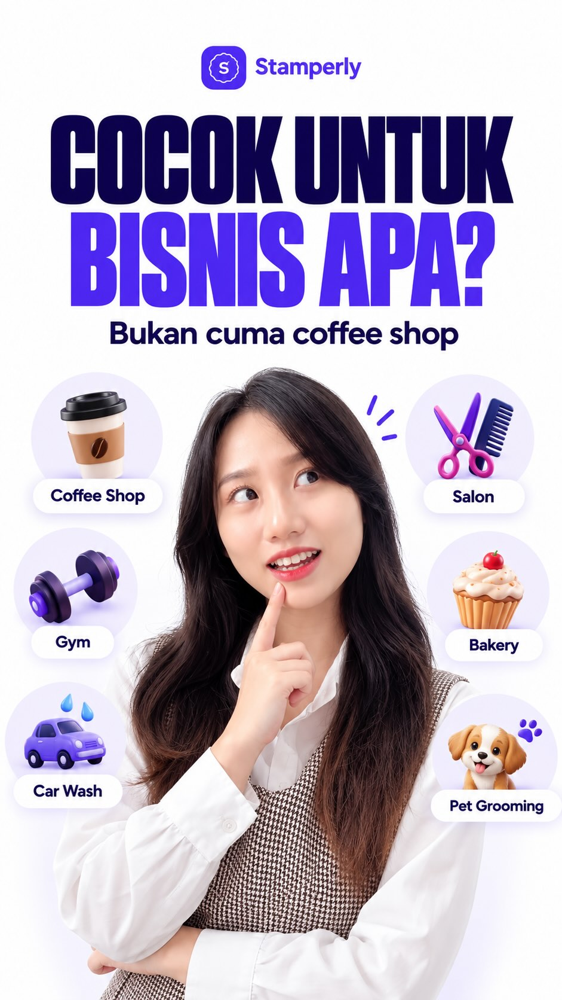

01

Setup Loyalty Program Gratis
Di Stamperly ada Free Setup Assistance buat kamu yang pengen punya loyalty program tapi masih bingung mulai dari mana.
Digital stamp cards that live in Apple & Google Wallet. Automatic notifications. Real customer insights. A complete loyalty program app, without asking anyone to download an app.

This project is a video production project created to introduce Stamperly, a digital loyalty platform that helps businesses replace traditional paper stamp cards with convenient digital loyalty cards.
The content focuses on presenting Stamperly's features and use cases through engaging talking-head videos designed for social media platforms.

The videos use a casual and engaging talking-head style to present Stamperly in a clear and relatable way. The visual direction combines clean framing, expressive presentation, bold graphics, and fast pacing to keep the content suitable for social media audiences.
The content is structured around common questions and concerns from business owners, presenting Stamperly's features and use cases through short, informative, and easy-to-understand videos.
Main editing software used for cutting, sequencing, pacing, and final video assembly.
Used for motion graphics, visual effects, and animated elements in the videos.
Interface design tool used for planning layouts, visual references, storyboards, and design assets.
Used for script planning, communication and timeline management, and tracking project progress.

The editing process focused on selecting the best takes, creating a clear pacing, and shaping each video into a concise social media format. Talking-head footage was combined with text, graphics, transitions, and supporting visuals to emphasize the key message.
Explain the color grading, contrast, visual treatment, export preparation, and final finishing process.
A collection of videos created as part of the same content series or campaign.

Di Stamperly ada Free Setup Assistance buat kamu yang pengen punya loyalty program tapi masih bingung mulai dari mana.

Begitu stamp customer cukup, reward langsung tersedia di loyalty card mereka.

Masih pakai kartu stamp kertas? Sebenarnya nggak ada yang salah. 👀

FAQ Stamperly 👀 Bisnis baru punya 1 outlet, bisa pakai loyalty digital?

Join loyalty program nggak perlu ribet 👀

Loyalty program cuma buat coffee shop? Nggak juga 👀